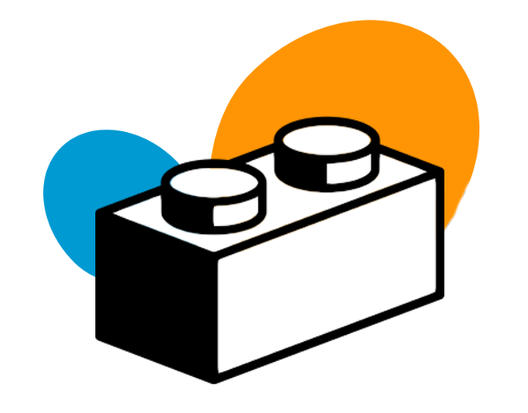

scikit-lego¶
We love scikit learn but very often we find ourselves writing custom transformers, metrics and models. The goal of this project is to attempt to consolidate these into a package that offers code quality/testing. This project is a collaboration between multiple companies in the Netherlands. Note that we’re not formally affiliated with the scikit-learn project at all.
Installation¶
Install scikit-lego via pip with
pip install scikit-lego
Alternatively you can fork/clone and run:
pip install --editable .
Usage¶
from sklego.transformers import RandomAdder
from sklearn.preprocessing import StandardScaler
from sklearn.linear_model import LogisticRegression
from sklearn.pipeline import Pipeline
...
mod = Pipeline([
("scale", StandardScaler()),
("random_noise", RandomAdder()),
("model", LogisticRegression(solver='lbfgs'))
])
...